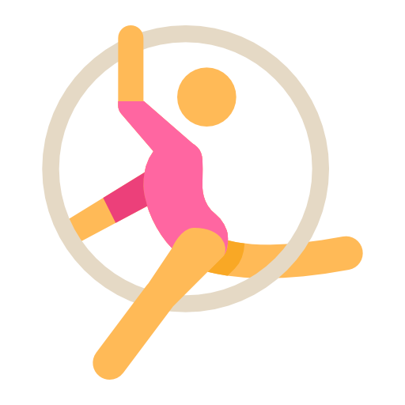

BRIGHT MINDS SCHOOL
Кружки и секции
Футбол
Футбол несет огромную пользу для здоровья ребенка. В первую очередь тренировки на свежем воздухе значительно укрепляют иммунную систему.
Программирование
Изучение любого языка программирования развивает абстрактное и логическое мышление, приучает к анализу данных и созданию алгоритмов, предоставляет огромный простор для творчества.
Робототехника
Робототехника – это техническое творчество, первый шаг к изобретательской, конструкторской и рационализаторской деятельности. Это освоение начал механики, схемотехники, электроники, а также программирования.
Шахматы
Дети, что развили нестандартное мышление благодаря шахматам, вырастают творческими и вдохновленными людьми. Они умеют взглянуть на ситуацию под разными углами и придумать необычное решение.
Каратэ

Каратэ для детей – является разновидностью физической нагрузки, которая развивает выносливость, ловкость, силу, самодисциплину. Кроме того, посещение секций каратэ для детей, способствует повышению уверенности в себе.
Хореография

Хореография для детей – замечательный способ развития музыкального слуха, координации, гибкости, ребенок сможет сформировать хорошую осанку, стать боле уверенным в себе, веселым и открытым.
Домбра
С помощью музыкальных занятий ребенок развивает свои эмоциональные, моральные грани личности, что открываются благодаря проявлениям искренности, душевности, человечности, сопереживания.
Гимнастика
Регулярные занятия гимнастикой укрепляют мышцы, формируют красивую осанку и фигуру, снимают умственное и физическое напряжение и компенсируют малоподвижный образ жизни.
Японский язык
Учить японский язык полезно для памяти и умственного развития человека. Сильное отличие японского от европейских языков превращает его изучение в очень увлекательное занятие, «гимнастику» для мозга.
Анлийский разговорный
Изучающие два языка дети лучше контролируют себя и способны более тщательно следить за ходом своих мыслей. А еще они общительны и быстро адаптируются в новой обстановке
Актерское мастерство
Уроки ораторского и актерского мастерства важны не только для тех, кто мечтает о карьере актера. Занятия помогают стать увереннее в себе, не бояться высказывать свою точку зрения, отстаивать ее, легко находить общий язык со сверстниками, старшими собеседниками.ИЗО
Художественные занятия развивают мелкую моторику, а это – стимуляция участков мозга, ответственных за мышление, речь, зрительную и двигательную память, координацию. Развивая ассоциативное мышление, навыки ориентации в пространстве, проецирования на плоскости.